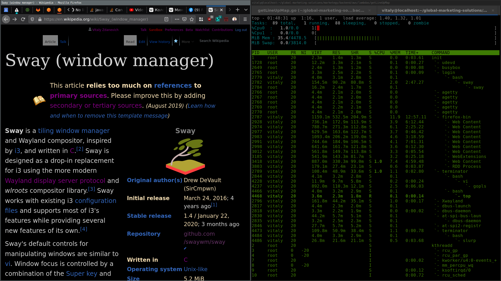

Gentoo

Gentoo is a source-based meta-distribution where almost every package is compiled from source code on your own machine. This gives you the ultimate level of control and optimization, you choose exactly what features are compiled in and what gets left out. It's a steep learning experience, but users come away with a deep understanding of how Linux works.
Desktop Environment
User's choice
Package Manager
Portage (emerge)
Latest Release
Rolling
Init System
OpenRC or systemd
Support Cycle
Rolling
Architecture
x86, x86_64, ARM, RISC-V, PowerPC
Key Features
- Every package compiled from source, optimized for your exact CPU
- USE flags for fine-grained control over what features get compiled in
- Choose your init system: OpenRC, systemd, runit, or s6
- Portage package manager with thousands of ebuilds
- Supports the widest range of architectures of any distro
- Deep learning experience, you will understand Linux inside and out